Introduction
In this vignette, we want to show how to use geocmeans to do fuzzy clustering on a raster dataset. The idea is simple, each pixel of a raster is an observation, and each band of the raster is a variable. Based on this, the same methodology can be applied, but rasters can not be handled like classical tabular and vector dataset. The example given use a medium size raster so some part of the vignette can be quite long to run (in particular when select_parameters is used).
We give a practical example here with a raster of 5 bands:
- band 1: blue (wavelength: 0.45-0.51)
- band 2: green (0.53-0.59)
- band 3: red (0.64-0.67)
- band 4: near infrared (0.85-0.88)
- band 5: shortwave infrared (1.57-1.65)
- band 6: shortwave infrared (2.11-2.29)
The image has a resolution of 30x30 metres and was acquired by Landsat 8 on June 14, 2021. It is provided with geocmeans as a Large RasterBrick Arcachon.
Loading the dataset
Let us start with a simple visualization of the dataset
library(geocmeans)
library(ggpubr)
library(future)
library(tmap)
library(viridis)
library(RColorBrewer)
library(terra)
Arcachon <- terra::rast(system.file("extdata/Littoral4_2154.tif", package = "geocmeans"))
names(Arcachon) <- c("blue", "green", "red", "infrared", "SWIR1", "SWIR2")
# show the pseudo-color image
terra::plotRGB(Arcachon, r = 3, g = 2, b = 1, stretch = "hist")
We can distinguish urban areas, crops, deep water, coast and sand areas. We can expect approximately five clusters.
Fuzzy C-means
As a first exploration and to determine the appropriate number of clusters, we propose the applcication of a classical FCM.
The dataset must be structured as a list of bands. The names given to the list elements will be used as variable names.
# sonverting the RasterBrick to a simple list of SpatRaster
dataset <- lapply(names(Arcachon), function(n){
aband <- Arcachon[[n]]
return(aband)
})
# giving a name to each band
names(dataset) <- names(Arcachon)
# finding an appropriate k and m values (using a multicore plan)
future::plan(future::multisession(workers = 6))
FCMvalues <- select_parameters.mc(algo = "FCM", data = dataset,
k = 5:10, m = seq(1.1,2,0.1), spconsist = FALSE,
indices = c("XieBeni.index", "Explained.inertia",
"Negentropy.index", "Silhouette.index"),
verbose = TRUE)
# plotting the silhouette index values
ggplot(FCMvalues) +
geom_raster(aes(x = m, y = k, fill = Silhouette.index)) +
geom_text(aes(x = m, y = k, label = round(Silhouette.index,2)), size = 2)+
scale_fill_viridis() +
coord_fixed(ratio=0.125) 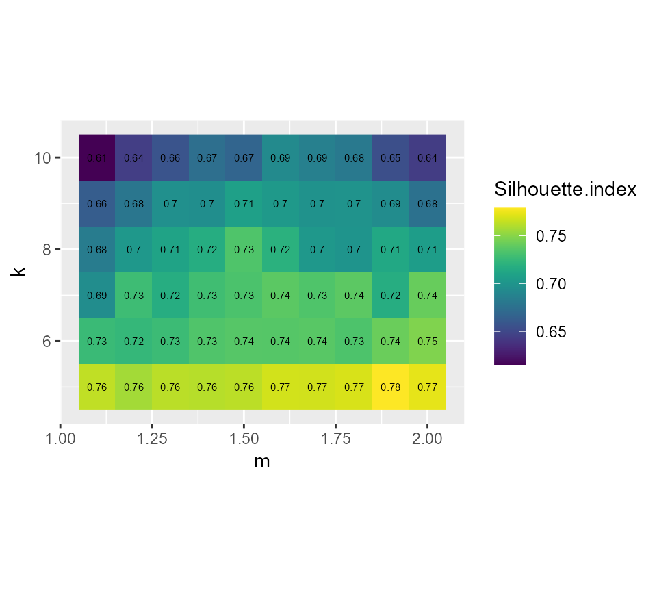
# plotting the explained inertia
ggplot(FCMvalues) +
geom_raster(aes(x = m, y = k, fill = Explained.inertia)) +
geom_text(aes(x = m, y = k, label = round(Explained.inertia,2)), size = 2)+
scale_fill_viridis() +
coord_fixed(ratio=0.125)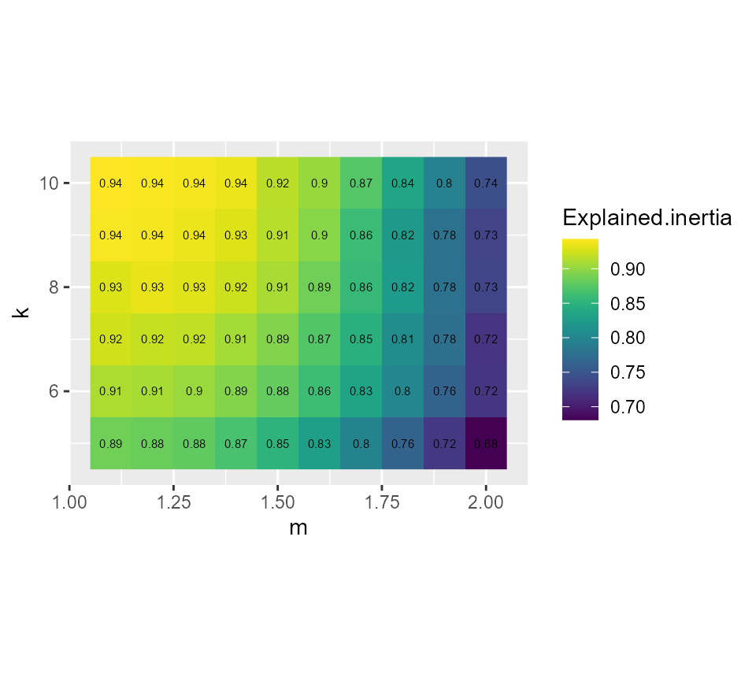
Considering the values above, we select k = 7 and m = 1.5, it seems to provide a good compromise between the silhouette index and the explained inertia.
FCM_result <- CMeans(dataset, k = 7, m = 1.5, standardize = TRUE,
verbose = FALSE, seed = 789, tol = 0.001, init = "kpp")
maps1 <- mapClusters(object = FCM_result, undecided = 0.45)
# plotting membership values for group 2
maps1$ProbaMaps[[2]] + theme(legend.position = "bottom")
# plotting membership values for group 5
maps1$ProbaMaps[[5]] + theme(legend.position = "bottom")
# plotting the most likely categories
maps1$ClusterPlot + theme(legend.position = "bottom") + scale_fill_brewer(palette = "Set2")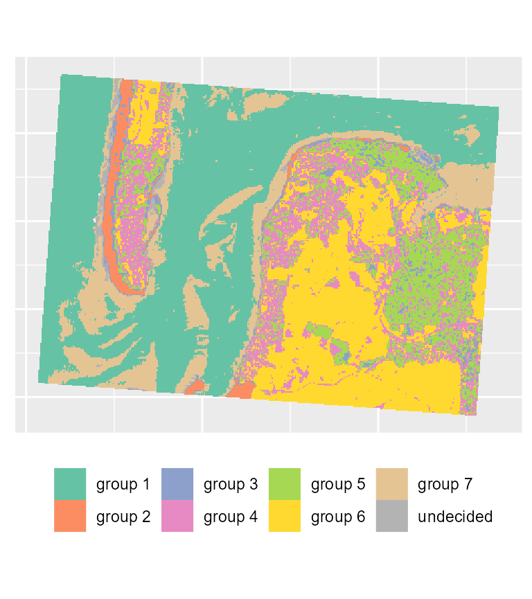
We can already determine some groups from these maps:
- deep water
- sand
- wet sand
- high density urban areas
- low density urban areas
- vegetation
- shallow water
We could try to obtain a more crispy partition by using the generalized version of FCM. This implies selecting a parameter called beta.
GFCMvalues <- select_parameters.mc(algo = "GFCM", data = dataset,
k = 7, m = seq(1.1,2,0.1), beta = seq(0.1,0.9,0.1),
spconsist = FALSE, verbose = TRUE, init = "kpp",
indices = c("XieBeni.index", "Explained.inertia",
"Negentropy.index", "Silhouette.index"))
# plotting the explained inertia
ggplot(GFCMvalues) +
geom_raster(aes(x = m, y = beta, fill = Explained.inertia)) +
geom_text(aes(x = m, y = beta, label = round(Explained.inertia,2)), size = 2)+
scale_fill_viridis() +
coord_fixed(ratio=1)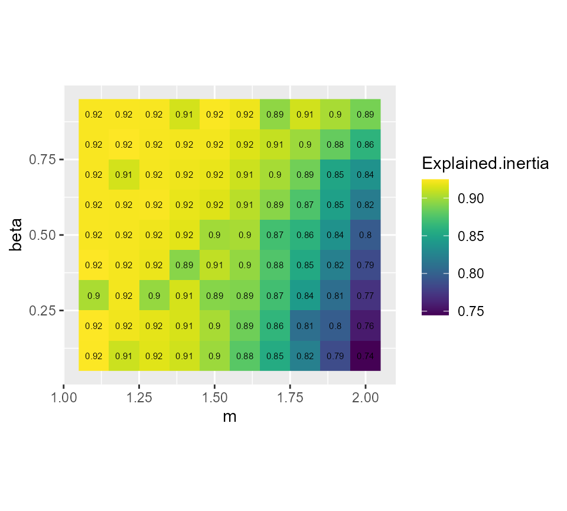
# plotting the silhouette index
ggplot(GFCMvalues) +
geom_raster(aes(x = m, y = beta, fill = Silhouette.index)) +
geom_text(aes(x = m, y = beta, label = round(Silhouette.index,2)), size = 2)+
scale_fill_viridis() +
coord_fixed(ratio=1)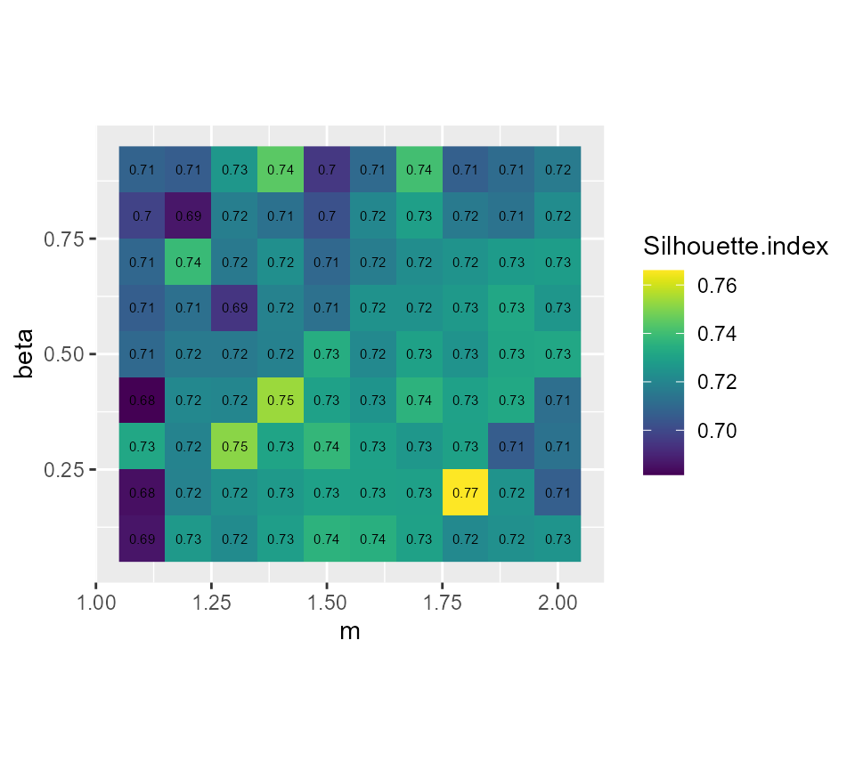
It seems that beta = 0.5 gives the best results with m = 1.5, we gain 2 more percentage points of inertia while keeping the same Silhouette index.
GFCM_result <- GCMeans(dataset, k = 7, m = 1.5, beta = 0.5, standardize = TRUE,
verbose = FALSE, seed = 789, tol = 0.001)
# reorganizing the groups for an easier comparison
GFCM_result <- groups_matching(FCM_result, GFCM_result)
maps2 <- mapClusters(object = GFCM_result, undecided = 0.45)
# plotting membership values for group 2
maps2$ProbaMaps[[2]] + theme(legend.position = "bottom")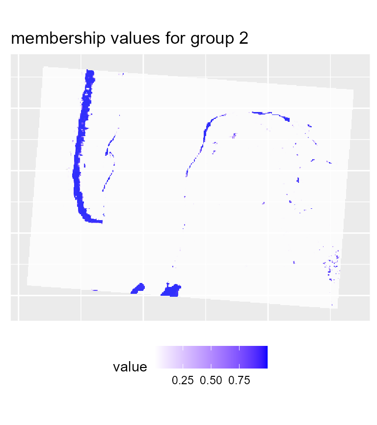
# plotting membership values for group 5
maps2$ProbaMaps[[5]] + theme(legend.position = "bottom")
# plotting the most likely categories
maps2$ClusterPlot + theme(legend.position = "bottom") +
scale_fill_brewer(palette = "Set2")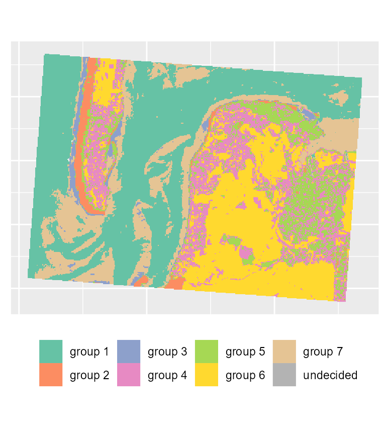
We can see that with the same threshold, we obtain far less undecided pixels and only few variations among groups in comparison with the previous results.
Spatial Generalized Fuzzy C-means
The image we obtain comprise a lot of noise due to its rather small resolution. To obtain a more spatially homogeneous clustering, we will use here the SGFCM method.
We must determine the right value of alpha and the size of the window. When working with rasters, a square window is used to define the neighbours around a pixel because using a classical neighbour matrix would not be efficient.
w1 <- matrix(1, nrow = 3, ncol = 3)
w2 <- matrix(1, nrow = 5, ncol = 5)
w3 <- matrix(1, nrow = 7, ncol = 7)
future::plan(future::multisession(workers = 6))
SGFCMvalues <- select_parameters.mc(algo = "SGFCM", data = dataset, k = 7, m = 1.5,
beta = 0.5, alpha = seq(0.5,2,0.1),
window = list(w1,w2,w3),
spconsist = TRUE, nrep = 5,
verbose = TRUE, chunk_size = 4,
seed = 456, init = "kpp",
indices = c("XieBeni.index", "Explained.inertia",
"Negentropy.index", "Silhouette.index"))
dict <- data.frame(
w = c(1,2,3),
window = c("3x3","5x5","7x7")
)
SGFCMvalues$window <- dict$window[match(SGFCMvalues$window,dict$w)]
# showing the silhouette index
ggplot(SGFCMvalues) +
geom_raster(aes(x = alpha, y = window, fill = Silhouette.index)) +
geom_text(aes(x = alpha, y = window, label = round(Silhouette.index,2)), size = 1.5)+
scale_fill_viridis() +
coord_fixed(ratio=0.125)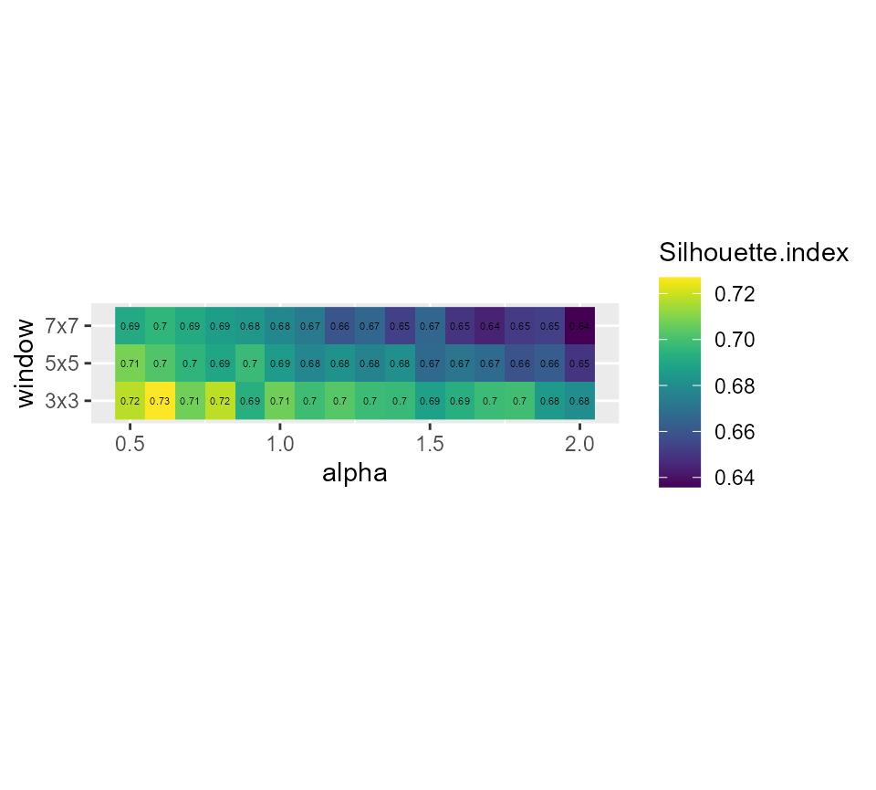
# showing the explained inertia
ggplot(SGFCMvalues) +
geom_raster(aes(x = alpha, y = window, fill = Explained.inertia)) +
geom_text(aes(x = alpha, y = window, label = round(Explained.inertia,2)), size = 1.5)+
scale_fill_viridis() +
coord_fixed(ratio=0.125)
# showing the spatial inconsistency
ggplot(SGFCMvalues) +
geom_raster(aes(x = alpha, y = window, fill = spConsistency)) +
geom_text(aes(x = alpha, y = window, label = round(spConsistency,2)), size = 1.5)+
scale_fill_viridis() +
coord_fixed(ratio=0.125) Its seems that alpha = 0.9 and a small window of 3x3 gives good results, but we have an important loss in explained inertia. Note that when larger windows need to be used, it is possible to define distance based circular windows with the function circular_window.
SGFCM_result <- SGFCMeans(dataset, k = 7, m = 1.5, standardize = TRUE,
lag_method = "mean",
window = w1, alpha = 0.9, beta = 0.5,
seed = 789, tol = 0.001, verbose = FALSE, init = "kpp")
# reorganizing the groups for an easier comparison
SGFCM_result <- groups_matching(FCM_result, SGFCM_result)
maps3 <- mapClusters(object = SGFCM_result, undecided = 0.2)
# plotting membership values for group 2
maps3$ProbaMaps[[2]] + theme(legend.position = "bottom")
# plotting membership values for group 5
maps3$ProbaMaps[[5]] + theme(legend.position = "bottom")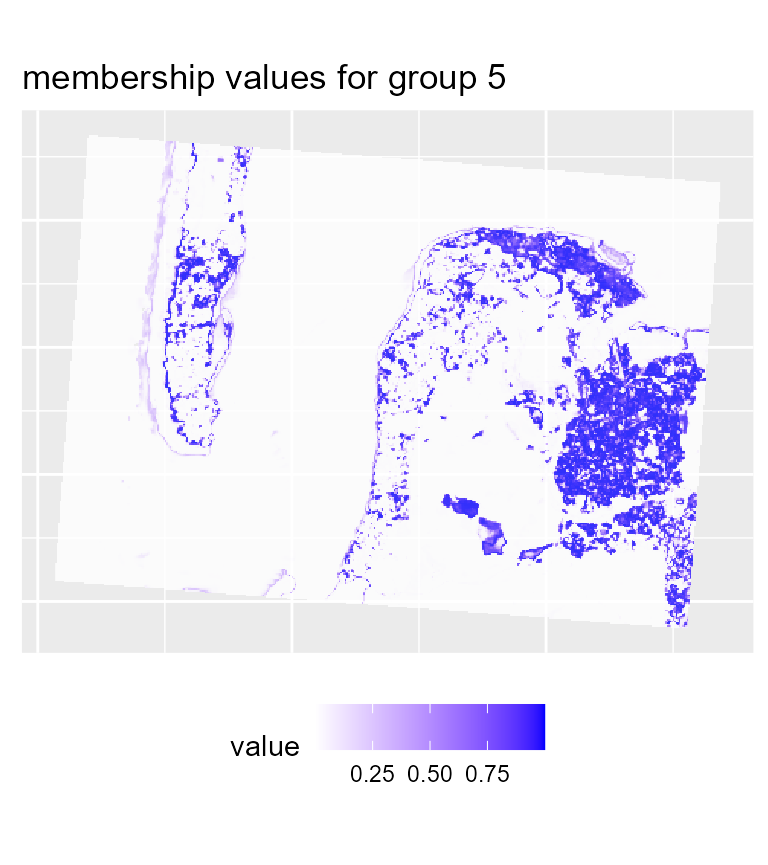
# plotting the most likely categories
maps3$ClusterPlot + theme(legend.position = "bottom") +
scale_fill_brewer(palette = "Set2")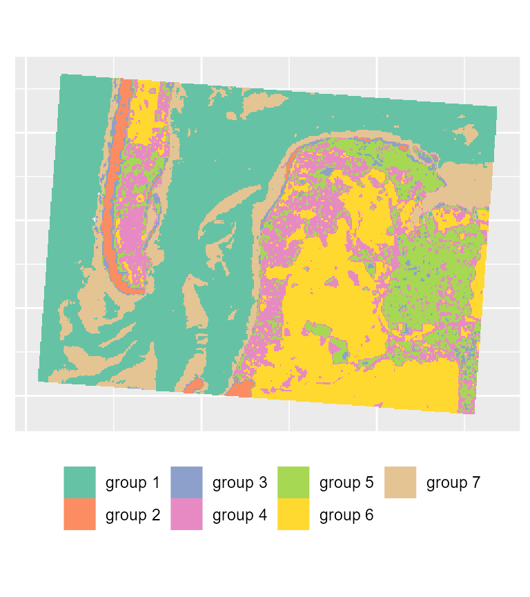
To map the results of the SGFCM, it is necessary to lower the threshold of the parameter undecided. In comparison with the previous maps, we obtain a much smoother result which can be easier to use for mapping purposes or for delimiting areas. As suggested by the drop in the explained inertia, we lost a lot of details. This is not surprising if we consider that the pixels have a size of 30 metres, and the neighbours can be very different from the center of the window. Moreover, group 4 no longer describes wet sand, but interstitial areas between low and high density urban areas.
cluster_results <- list(FCM_result, GFCM_result, SGFCM_result)
indices <- sapply(cluster_results, function(clust){
c(calcexplainedInertia(clust$Data, clust$Belongings),
calcSilhouetteIdx(clust$Data, clust$Belongings),
spConsistency(clust, window = w1, nrep = 5)$Mean)
})
colnames(indices) <- c("FCM", "GFCM", "SGFCM")
rownames(indices) <- c("explained inertia", "silhouette index", "spatial inconsistency")
knitr::kable(indices, digits = 3)| FCM | GFCM | SGFCM | |
|---|---|---|---|
| explained inertia | 0.894 | 0.913 | 0.894 |
| silhouette index | 0.736 | 0.719 | 0.704 |
| spatial inconsistency | 0.416 | 0.423 | 0.287 |
SGFCM proposes a solution with a spatial inconsistency index divided by three. However, in that context, the spatial algorithm might not be the best choice considering the hard drop of both explained inertia and Silhouette index. Here FCM and FGCM produces very similar results.
Spatial diagnostic
geocmeans provides multiple tools to assess the spatial consistency of a classification. For a raster dataset, the function spatialDiag will calculate the Moran I values for each column in the membership matrix, the spatial inconsistency index and the local ELSA statistic.
diagGFCM <- spatialDiag(GFCM_result, window = matrix(1, nrow = 3, ncol = 3), nrep = 5)The global Moran I indicates the level of spatial autocorrelation for each category.
knitr::kable(diagGFCM$MoranValues, digits = 3, row.names = FALSE)| Cluster | MoranI |
|---|---|
| Cluster_1 | 0.959 |
| Cluster_2 | 0.827 |
| Cluster_3 | 0.712 |
| Cluster_4 | 0.654 |
| Cluster_5 | 0.653 |
| Cluster_6 | 0.878 |
| Cluster_7 | 0.888 |
Here groups 4 and 5 have the lowest levels of spatial autocorrelation, meaning that these groups tend to be less surrounded by pixels from the same groups and are more fragmented. Both groups are urban areas (high and low density) and are spatially close; this is why they have lower Moran I values. We could explore the local Moran I values for both with the function calc_local_moran_raster. This function provides the same results as MoranLocal from raster but is significantly faster.
library(classInt)
# calculating the local Moran I values
loc_moran4 <- calc_local_moran_raster(GFCM_result$rasters$group4,w1)
loc_moran5 <- calc_local_moran_raster(GFCM_result$rasters$group5,w1)
# mapping the values
cols <- rev(RColorBrewer::brewer.pal(n = 8, "Spectral"))
vals <- terra::values(loc_moran4, mat = FALSE)
limits <- classIntervals(vals, n = 8, style = "kmeans")
plot(loc_moran4, col = cols, breaks = limits$brks)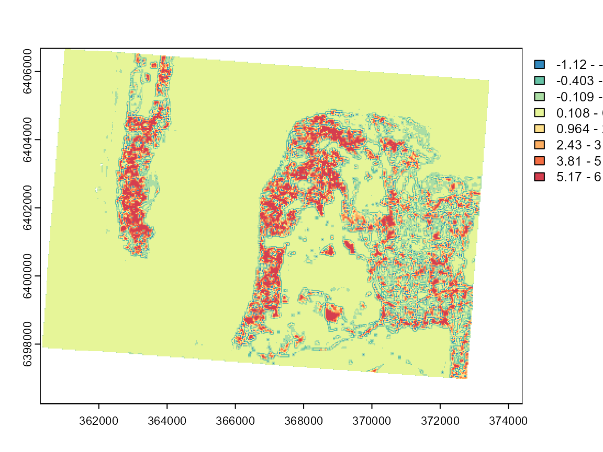
vals <- terra::values(loc_moran5, mat = FALSE)
limits <- classIntervals(vals, n = 8, style = "kmeans")
plot(loc_moran5, col = cols, breaks = limits$brks)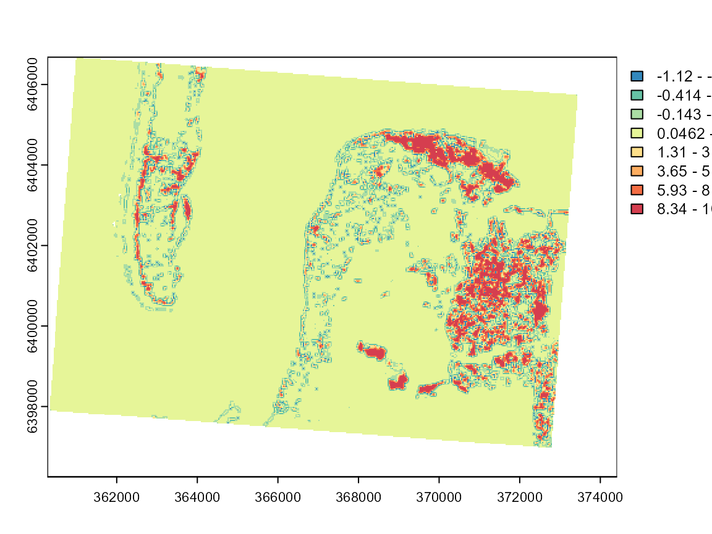
These maps can be used to investigate the limits of the two categories and determine if the classification is meaningful. Group 7 is by far the most spatially dispersed, which is consistent with its nature: low-density urban areas.
The local Moran I values are useful but are limited to one dimension of the fuzzy classification. An interesting alternative is the ELSA statistic (Naimi et al. 2019). It measures local differences in final group attributions with an entropy based index and combines it with the Euclidean distance between the groups. In other words, it is a measure of spatial autocorrelation for a categorical variable which takes into account the level of dissimilarity between categories. It can be calculated with the following formula:
\[\begin{array}{l} E_{i}=E_{a i} \times E_{c i} \\ E_{a i}=\frac{\sum_{j} w_{i j} d_{i j}}{\max \{d\} \sum_{j} w_{i j}}, j \neq i \\ E_{c i}=-\frac{\sum_{k=1}^{m_{w}} p_{k} \log _{2}\left(p_{k}\right)}{\log _{2} m_{i}}, j \neq i \\ m_{i}=\left\{\begin{array}{l} m \text { if } \sum_{j} w_{i j}>m \\ \sum_{j} w_{i j}, \text { otherwise } \end{array}\right. \\ d_{i j}=\left|c_{i}-c_{j}\right| \end{array}\]
- \(d_{ij}\) is the dissimilarity (e.g. Euclidean distance) between categories i and j. In a classification context, it can be calculated as the distance between the centres of the clusters (categories).
- \(p_k\) is the probability of seeing group k within the neighbouring binary window \(w_{ij}\).
cols <- RColorBrewer::brewer.pal(n = 7, "Greys")
vals <- terra::values(diagGFCM$Elsa, mat = FALSE)
limits <- classIntervals(vals[!is.na(vals)], n = 7, style = "kmeans")
plot(diagGFCM$Elsa, col = cols, breaks = limits$brks)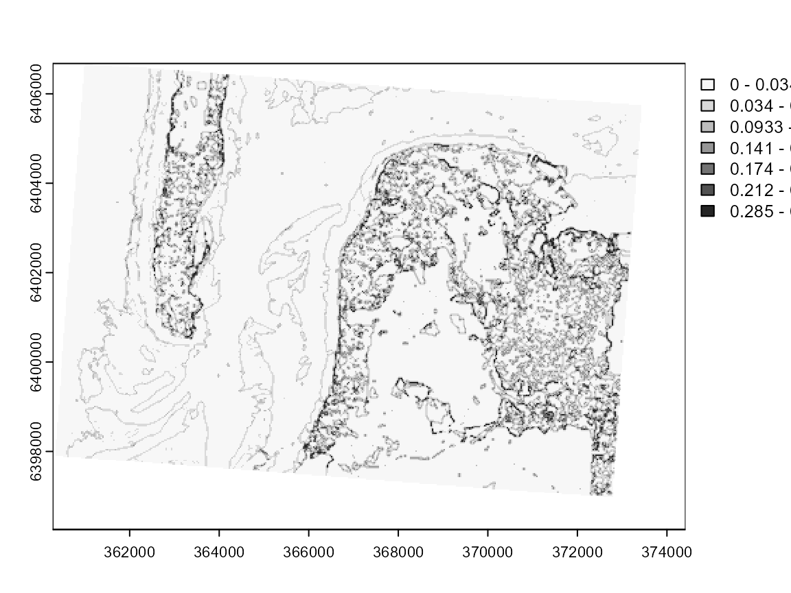
This map clearly draws the contours of each cluster. The darker pixels are located at the frontier of clusters or in areas with high heterogeneity.
The original version of ELSA uses a hard partition and thus does not exploit all the information we might get from a fuzzy classification. We propose here an adjusted version: the fuzzy ELSA. As an input, we do not use a categorical vector but a matrix of membership values.
\[\begin{array}{l} \xi_{ij} = (|x_i-x_j|\otimes|x_i-x_j|)\\ Ea_i = \frac{\sum_j(w_{ij}\frac{grandsum(\xi_{ij}\odot d)}{2})}{max \{d\}*\sum_{j} w_{i j}} \\ E_{c i}=-\frac{\sum_{k=1}^{m_{w}} p_{k} \log _{2}\left(p_{k}\right)}{\log _{2} m_{i}}, j \neq i \\ m_{i}=\left\{\begin{array}{l} m \text { if } \sum_{j} w_{i j}>m \\ \sum_{j} w_{i j}, \text { otherwise } \end{array}\right. \\ d_{i j}=\left|c_{i}-c_{j}\right| \end{array}\]
with:
- x the membership matrix, and \(x_i\) the membership values of observation i to all clusters,
- \(p_k\) the sum of membership values to each cluster arround observation i including i,
- \(\otimes\) the outer product between two vectors,
- \(w\) a binary spatial weight matrix indicating neighbours for each observation,
- d the dissimilarity matrix between clusters; its diagonal must be filled with zeros,
- \(\odot\) the element wise product between two matrices,
The fuzzy ELSA can be seen as a generalization of the categorical ELSA and provides the same results if a binary matrix is given. This indicator has not been presented in a paper yet (we are working on it), so it is currently not calculated by spatialDiag. It can be obtained with the function calcFuzzyELSA.
fuzzy_elsa_rast <- calcFuzzyELSA(GFCM_result,window = matrix(1,nrow = 3, ncol = 3))
cols <- RColorBrewer::brewer.pal(n = 7, "Greys")
vals <- terra::values(fuzzy_elsa_rast, mat = FALSE)
limits <- classIntervals(vals[!is.na(vals)], n = 7, style = "kmeans")
plot(fuzzy_elsa_rast, col = cols, breaks = limits$brks)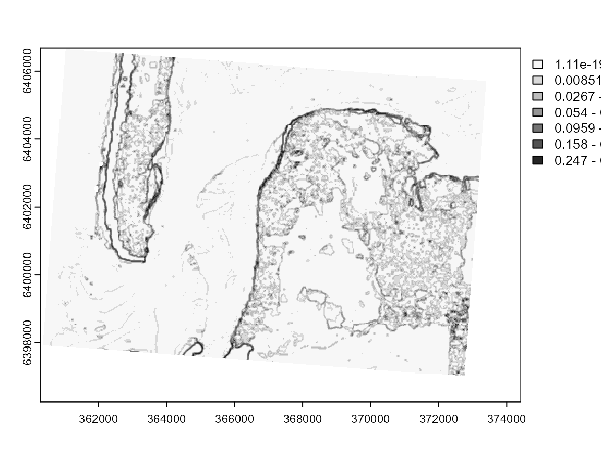 In this case, we can see that the fuzzy ELSA draws more important limits along the coasts, and that the differences between deep and shallow water are weaker. We also have strong artefacts at the South-East (black dots), which are in reality long buildings in a industrial and commercial area.